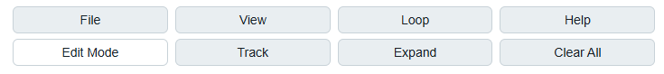
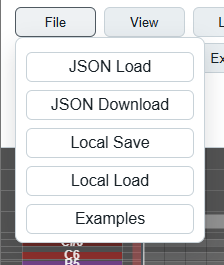
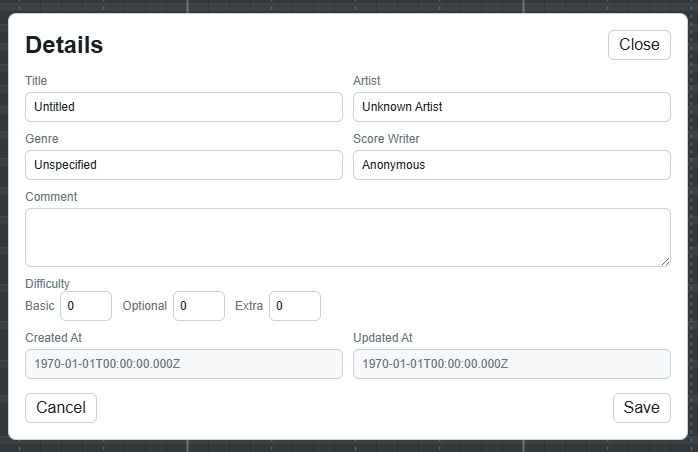

| A | B | |
|---|---|---|
1 | * 피드백, 버그 제보, 개선 의견 환영합니다. 제작자 이메일 : fav_09@naver.com * 매뉴얼의 원본은 한글로 작성되었으며, 이외의 언어로 된 매뉴얼은 AI 번역과 최소한의 검수를 거친 번역본임을 밝힙니다. 내용이 부정확하면 제보 부탁드립니다. * 업데이트에 따라 매뉴얼과 달라지거나 추가된 기능이 있을 수 있습니다. 매뉴얼의 최종 갱신일은 --입니다. * 아직 테스트 단계의 웹 앱입니다. 부족한 점이 있을 수 있습니다. | |
2 | 전세계 오타마토니스트 여러분 안녕하십니까? SPRED는 오타마톤같은 프렛리스 악기를 위해 개발된 악보 작성 / 재생 / 연습 보조용 도구입니다. 별도의 프로그램 설치 없이 바로 웹 페이지에서 이용 가능합니다. 주요 기능은 아래와 같습니다. - 악보 JSON 불러오기 / 저장하기 - 피아노롤 악보 재생 - 악보 제작과 편집 - 악보 양식 변경 - YouTube 영상과 악보 재생 싱크 - 마이크 입력을 이용한 practice mode(beta) | |
3 | 1. 시작하기 | |
4 | 1.1. 권장 환경 | |
5 | - PC + 크롬 브라우저를 중심으로 개발하고 있습니다. - 모바일에서도 악보 로드 / 재생은 가능하지만 기본 지원 대상은 아닙니다. 일부 기능은 불편하거나 동작하지 않을 수 있습니다. | |
6 | 1.2. 권장 사양 | |
7 | (이후 현재 로컬 환경의 컴퓨터 사양을 기입) | |
8 | ||
9 | 2. 상단 메뉴 | |
10 | ||
11 | 2.1. 왼쪽 : 메뉴 영역 | |
12 |  | |
13 | 메뉴 영역에서는 프로그램의 각종 설정을 조정합니다. | |
14 | ||
15 | 2.1.1. File | |
16 |  | * 악보 파일을 로드하거나 저장합니다. * 기본적으로 악보의 확장자는 .json입니다. * 제 3자가 제작한 .json을 로드하고자 하는 경우 사전에 안전한 파일인지 확인하는 것을 권장합니다. - JSON Download : 생성된 악보를 .json 파일로 저장합니다. - JSON Load : 악보 .json 파일을 가져오면 악보를 로드할 수 있습니다. - Local Save : 악보를 임시 저장합니다. (※ 크롬 설정에서 웹사이트 쿠키와 데이터를 삭제 시 데이터가 사라집니다) - Local Load : 임시 저장된 악보를 다시 불러옵니다. - Examples : 악보 예시가 들어있습니다. 현재는 베타테스터에게만 제공되는 기능입니다. |
17 | ||
18 | 2.1.2. View | |
19 |  | * 악보의 시각적 설정을 변경합니다. - Zoom 슬라이드바 : 악보의 배율을 설정합니다. - Speed 슬라이드바 : 스크롤 속도가 빨라집니다. 악보 셀의 가로 길이가 늘어납니다. - Fullscreen : 전체화면 - Fit Height : 현재 화면과 악보의 크기를 맞추기 - Normal / Reverse : 악보의 위아래를 뒤집기 - Light / Dark : 색상 테마 변경 - Text off 체크박스 : 노트 위의 텍스트를 끄기 |
20 | ||
21 | 2.1.3. Loop | |
22 |  | * 악보의 특정 영역을 선택하여 루프할 수 있습니다. - Loop On / Off 버튼으로 루프를 끄고 킵니다. - Start : 시작 시점을 설정합니다. - Default값은 악보 전체의 시작 시점입니다. - Select Column을 선택한 뒤 악보의 한 점을 클릭하면 시작 시점을 변경할 수 있습니다. - End : 종료 시점을 설정합니다. - Default값은 악보 전체의 종료 지점입니다. - Start와 마찬가지로 Select Column으로 종료 시점을 변경할 수 있습니다. |
23 | 2.1.4. Edit Mode | |
24 | * 악보 편집 모드로 전환합니다. 이후 더 자세히 다루겠습니다. | |
25 | ||
26 | 2.1.5. Track | |
27 |  | * 활성화할 트랙을 선택합니다. * 비활성화된 트랙은 반투명해지고, 소리도 재생되지 않습니다. * 현재 버전에선 Basic, Optional, Extra 세 종류가 존재합니다. 각기 다른 색으로 구분합니다. * 트랙별 노트는 독립적으로 동작합니다. * 여러 트랙을 동시에 키고 노트를 찍으면 모든 트랙에 동시에 입력됩니다. |
28 | ||
29 | 2.1.5. Expand | |
30 |  | * 악보의 길이를 변경합니다. - Columns 입력칸 : 확장 / 축소할 칸 개수를 입력합니다. - Expand Right :입력된 수만큼 칸을 확장합니다. - Trim Right : 입력된 수만큼 칸을 축소합니다. |
31 | ||
32 | 2.1.6. Clear All | |
33 | * 악보 전체를 비우고 초기 기본 상태로 되돌아갑니다. | |
34 | ||
35 | 2.2. 중앙 : 플레이어 영역 | |
36 |  | |
37 | 전체적으로 일반적인 음악 플레이어와 비슷합니다. | |
38 | 2.1.1. 재생 관련 기능 | |
39 | - 재생, 정지 : 보편적인 미디어 플레이어와 동일하게 동작합니다. - 재생바 : 현재의 진행 상태를 나타냅니다. 드래그하여 악보를 슬라이드할 수도 있습니다. - Volume, Wave : 악보 노트의 볼륨과 소리 유형을 결정합니다. | |
40 | ||
41 | 2.1.2. Details | |
42 |  | |
43 | 악보의 정보를 열람하고 편집할 수 있습니다. 단, 생성일과 수정일은 저장 시점을 기준으로 자동 갱신되며 사용자가 직접 수정할 수 없습니다. 편집 후 Save를 누르면 정보가 저장됩니다. File -> JSON Download / Local Save 버튼으로 해당 정보를 보존할 수 있습니다. | |
44 | ||
45 | 2.1.3. practice mode (beta) | |
46 | 마이크 입력을 받아 악보와의 일치도를 측정하여 사용자의 음정과 박자감각을 평가하는 기능입니다. 자세한 것은 별도 항목에서 기술합니다. | |
47 | ||
48 | 2.3. 우측 : YouTube 영역 | |
49 | 유튜브 영상을 연동해 반주처럼 재생하는 기능입니다. - Video 주소 입력창에 유튜브 링크를 입력합니다. - Offset : 타이밍을 조절해 악보와 맞춥니다. 기기에 따라 적정값이 달라질 수 있습니다. - Reload : 링크나 Offset 수정 후 설정값에 따라 새로고침합니다. | |
50 | ||
51 | ||
52 | ||
53 | ||
54 | ||
55 | ||
56 | ||
57 | ||
58 | ||
59 | ||
60 | ||
61 | ||
62 | ||
63 | ||
64 | ||
65 | ||
66 | ||
67 | ||
68 | ||
69 | ||
70 | ||
71 | ||
72 | ||
73 | ||
74 | ||
75 | ||
76 | ||
77 | ||
78 | ||
79 | ||
80 | ||
81 | ||
82 | ||
83 | ||
84 | ||
85 | ||
86 | ||
87 | ||
88 | ||
89 | ||
90 | ||
91 | ||
92 | ||
93 | ||
94 | ||
95 | ||
96 | ||
97 | ||
98 | ||
99 | ||
100 | ||
101 | ||
102 | ||
103 | ||
104 | ||
105 | ||
106 | ||
107 | ||
108 | ||
109 | ||
110 | ||
111 | ||
112 | ||
113 | ||
114 | ||
115 | ||
116 | ||
117 | ||
118 | ||
119 | ||
120 | ||
121 | ||
122 | ||
123 | ||
124 | ||
125 | ||
126 | ||
127 | ||
128 | ||
129 | ||
130 | ||
131 | ||
132 | ||
133 | ||
134 | ||
135 | ||
136 | ||
137 | ||
138 | ||
139 | ||
140 | ||
141 | ||
142 | ||
143 | ||
144 | ||
145 | ||
146 | ||
147 | ||
148 | ||
149 | ||
150 | ||
151 | ||
152 | ||
153 | ||
154 | ||
155 | ||
156 | ||
157 | ||
158 | ||
159 | 2.3. 오른쪽 : Youtube 영역 | |